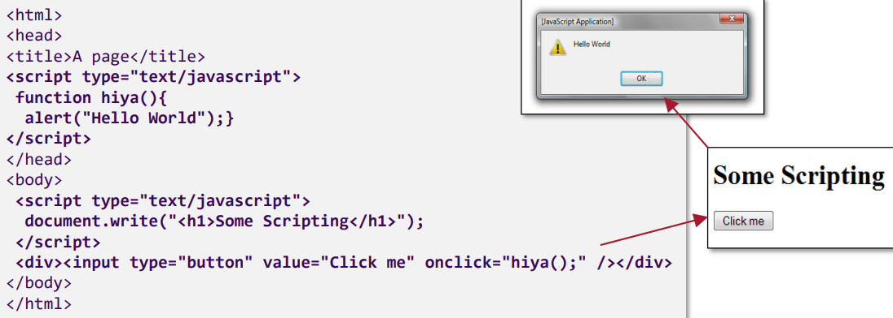
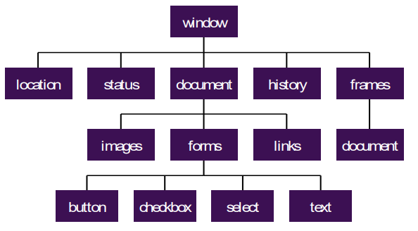

A Guide to Designing Webpages.
A web form is used to allow for user interaction, and collecting user input. Typically, this will consist of some form of user input data, and a submission button, which sends the input to a specified location. Forms are much easier than you'd expect, and very useful!
<body>
<form method="get" action="http://destinationserver.com/">
<p>
Enter your name: <input type="text" name="username" />
</p>
</form>
</body>
As you can see from the codebit, the structure of the form is fairly simple. The entirety of the form is
surrounded by <form>, which specifies the purpose of the form, and the destination of the results of
the
form. Then, within the form tags, an input tag will be used, stating its method of collecting data, as well
as a
'name' identifier. This is for how the data is sent to the destination, and simply tells the reader of the
data
what the data is telling them. For example, if the entered name was 'Joe', the sent data would read
'username=Joe'.
Below is an example of what the above code will compile into:
The tag '<input type="text" name="username" />' is referred to as a form control.
They
hold values (explicit, like a typed-in username, or implied, like a selection from a drop down list) which
are
specified by their name attribute. Common form controls include text input, radio buttons (a set of buttons
where only one can be selected), checkboxes (a set of buttons where multiple can be selected), drop-down
menus,
and password fields. The form will end with a submission and reset button, which send the data, or clear all
of
the fields accordingly. If one form control is left empty, it will simply be skipped over in the sent data.
Explanations of how to do each of these can be found here.
Due to the nature of forms, they must be organised. As such, there are many form-exclusive tags and attributes, which offer independent block-level structure, meaning typical tags such as <p> and <div> become redundant. For example, <fieldset> works like a <div>, isolating a section of the form, but surrounds the section in a visible box. The <legend> tag works in tandem, labelling the isolated section.
The most important part of the form is the submit button, which sends the data to the destination. Submit buttons can be custom images, or browser-drawn regular buttons. Most websites use the latter, as buttons can now be customised in CSS, and can fit the theme much better, and be interactable. The below code snipped would create one such browser button.
<input type="submit" value="Submit this info" />
Now, let's talk about GET vs POST. You may have noticed in the starting tag for the form, the method is specified to 'get'. When the user submits a form with a method set to 'get', the browser makes a HTTP GET request. If successful, the form data will be appended to the URL as a querystring, which is everything after a '?' in the URL. The script that processes this will look at the querystrint ot extract and use the data. All web requests default to 'get' including typed in addresses in browsers links clicked in pages and many similar requests.
Alternatively, the post method makes a HTML POST request, which is a specific method used for carrying data to the server in the request's body. This means there is no queryscript attached to any URL. As GET is the default if a developer wished to use POST they'd have to clearly specify their preference.
HTML5 differs here, as its form controls have some features not available in XHTML or HTML4. Essentially, there are more input types availabe to developers, including sliders, and date-selectors, which allows for much better data collection on the whole.
JavaScript is an aptly named scripting language that is embedded into the XHTML of a web page. Using a syntax similar to that of programming language C's, the language is executed in the client's browser, and does not hold any relation to the programming language Java. A full timeline of the history of JavaScript can be found here.
JavaScript is an inline addition to any web page, adding a large catalogue of features and interactions otherwise unobtainable, or very difficult to obtain. JavaScript can be used for interaction with mouse movement, browser-type based behaviours, or validation to forms (which will be investigated in depth below). The tag used to indicate a piece of JavaScript code is <script>, but must contain an attribute specifying it's type as interpreter/engine.
<script type="text/javascript">
<input type="submit" value="Submit this info" />
</script>
An additional attribute for 'src' may also be used in the initialising script tag if the script is external in nature, and the 'src' will link to the external JavaScript file. When this occurs any code between the two scrip tags will be ignored, but the script tag can never be self-closing/self-contained. External JavaScript can be more helpful depending on what the JavaScript's purpose is, as externally stored allows common functions to be shared, and the code to be reused across multiple pages with little duplication.
A difficult question when using JavaScript is where in the page to use it. A good rule to follow is to put as much code as you possible can in the <head> section, so the web page itself is not cluttered. This would be things like functions and definitions, whereas the actual body of the JavaScript would be where on the web page the JavaScript is meant to be implemented.
JavaScript follows the steps of a standard programming language, with strings numbers and booleans as
standard
data types. These can be loosely typed
(variableOne = 26; variableTwo = true; variableThree = "Hello!";) but it is better practise to
initialise with the key term var before the name of the variable, and then apply value to the
variable on
a different line.
Arrays exist in JavaScript with the standard zero-based index (Arrays start at 0). They can be created and
populated on the same line, or each entry populated independently of creation and can easily be manipulated
and
accessed. They are pretty much exactly how they function within Java.
Loops are also the same to how they function in Java with for loops, if loops, while loops, and do while
loops
all being supported.
You may have noticed the title for this section, 'JavaScript & HTML DOM', and it's time to detail what HTML DOM is. DOM stands for Document Object Model and is a language/platform neutral interface to a document. It defines a document's objects, relationships between the objects, along with their methods and proporties. This means it describes HTML documents, the browser window, and allows access to any part of a document.
The browser window/frame is the 'window' object, from with all objects are decended from in the hierarcy. In the image shown, you can see a direct descendent is the 'document' object. This object is the current web page and all HTML elements are components of this.
DOM nodes are accessed in a range of methods, which are typically standardised as W3C DOM 1.0 but
browsers generally develop different DOM's, most notable Internet Explorer.
Form validation is a good example of how JavaScript can enhance a website. Previously, there may have been no way to restrict data entered into input other than a restricted data type, but using JavaScript, you can do so! Take the example below:
Please input a number between 1 and 5:
That takes 16 lines of code, and can be quite useful when the information in the form is vital to not be wrong. Browsers also have granted an easy way of client-side validating form content, with the 'required' keyword. Typing 'required' at the end of the input tag means that the form cannot be submitted with that specific input box empty. This is commonly used when signing up for things online, and forgetting to enter details such as an email address.
<form action="/action_page.php" method="post">
<input type="text" name="fname" required>
<input type="submit" value="Submit">
</form>
You can find out how to validate numbers like this here!